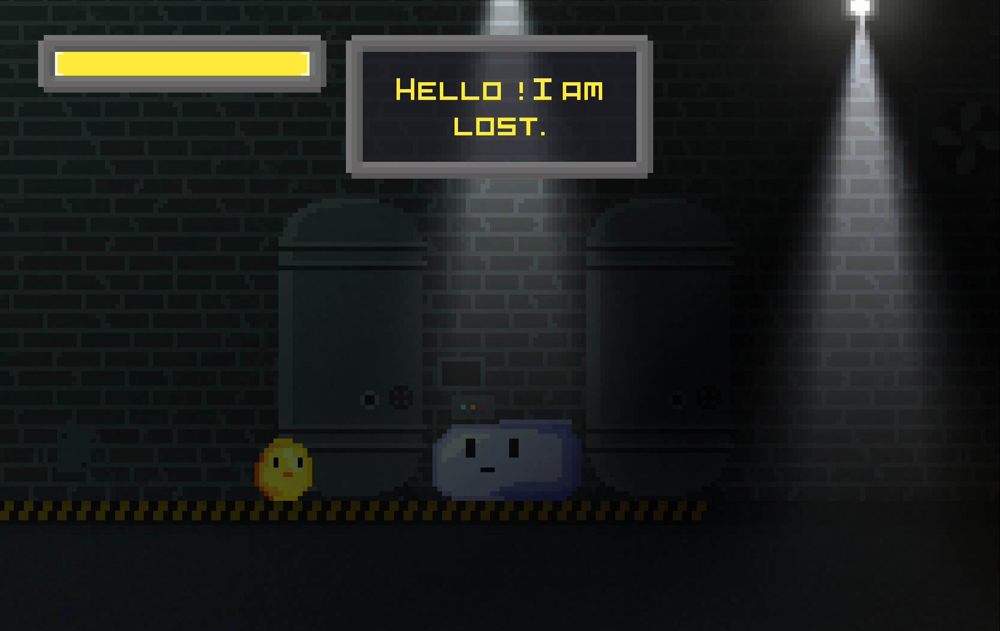
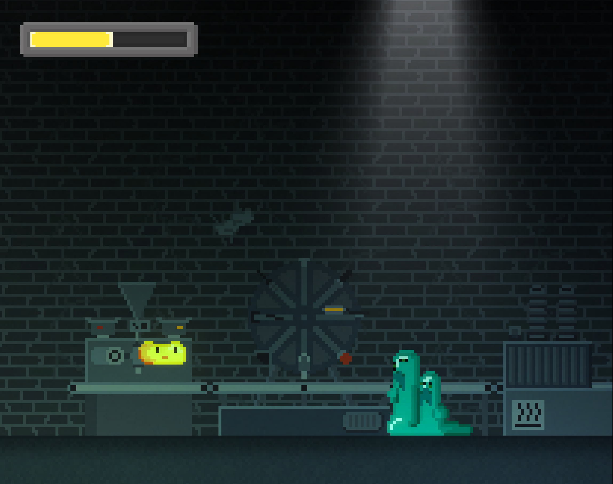
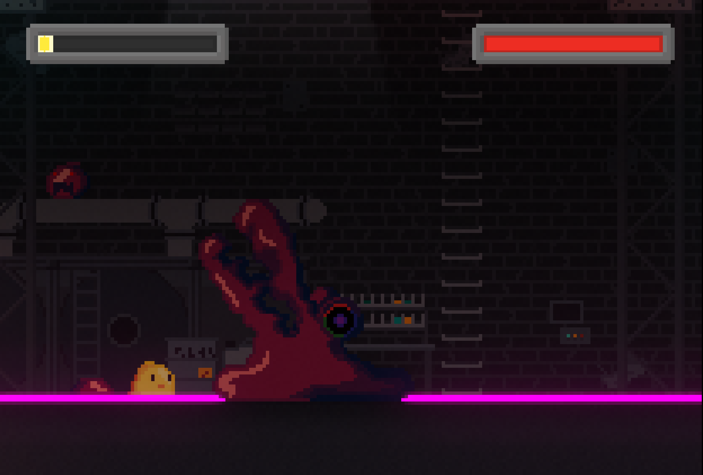
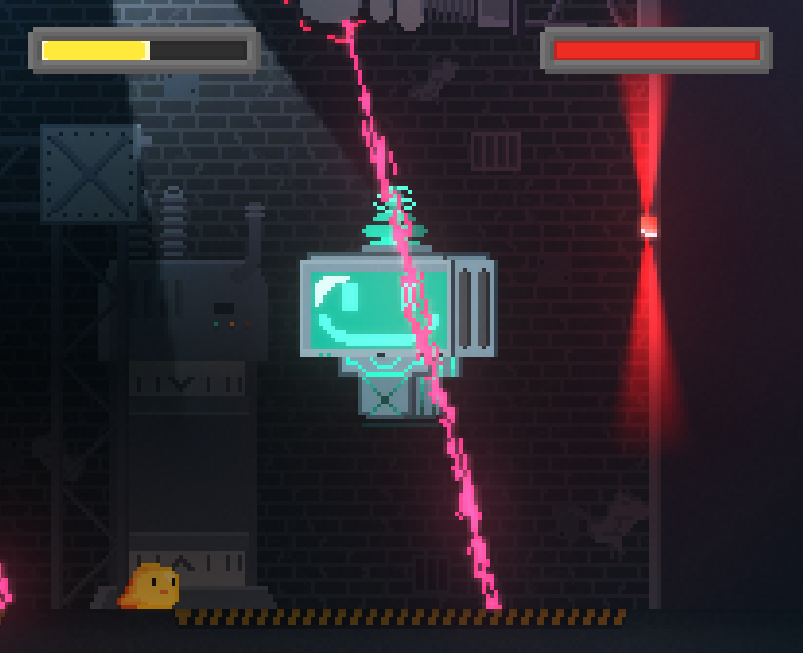

Description
E428 est sans doute le plus gros projet auquel j'ai participé et celui dont je suis le plus fier. C'est un jeu vidéo de type plateformer/aventure 2D conçu sous la plateforme Unity et qui a été développé en C#. Nous étions 3 sur ce projets et mon rôle à principalement été de créer les graphismes des personnages, des ennemis et des boss ainsi que leurs animations. Dans ce jeu vous inquarnez un slime de sirop de maïs du nom de Glucose qui doit s'échapper de l'angoissante usine aggroalimentaire où il a été conçu. Malheureusement de nombreux ennemis et boss issues d'expériences ou du staff mécanique de l'usine vous barrent la route. Le jeu se décompose en 4 niveaux avec leurs ennemis propres et un boss à la fin de chaque niveau pour passer au suivant. Après avoir vaincue le boss du dernier niveau la sortie vous attend!
 Maintenance
La maintenance qui a été effectuer sur ce jeu consiste à régler certains problèmes du jeu qui étaient présents à la première release du jeu. Avec mon coéquipier Paracétamol56 nous travaillons donc sur la même maintenance pour tenté de corriger ces erreurs. Pour ma part je me suis concentré sur les problèmes de certains ennemis et de certains boss. En effet le plus gros soucis se trouvait être le fait que certains ennemis possédaient une portée d'attaque quasiment infini ce qui pouvait être frustrant pour le joueur d'avoir un ennemi capable de le ciblé alors que celui-ci n'était même plus sur son écran. C'est pour cela que nous avons donc mis en place un système de limitation de portée d'attaque en cherchant la distance entre l'ennemi et le joueur. D'autres modification plus légère comme un ennemi spécifique qui ne se déplace plus quand il attaque ont été apporté.
Veille tecnhologique
Le projet et la maintenance sont réalisés sous le langage C# et sur la plateforme Unity. Le C# est un langage de programmation commun notament utilisé dans les jeux vidéos et les applications, de plus son étroite relation au langage C++ n'est que bénéfique pour sa popularité. Même si la plateforme et le langage nous ont été imposé cela n'en reste pas moins un langage adapté pour ce projet, de même pour Unity qui est une plateforme de création de jeux vidéo et d'applications très utilisée et appréciée. Mais Unreal Enfine aurait été par exemple une bonne alternative à Unity.
Le projet est disponible ici